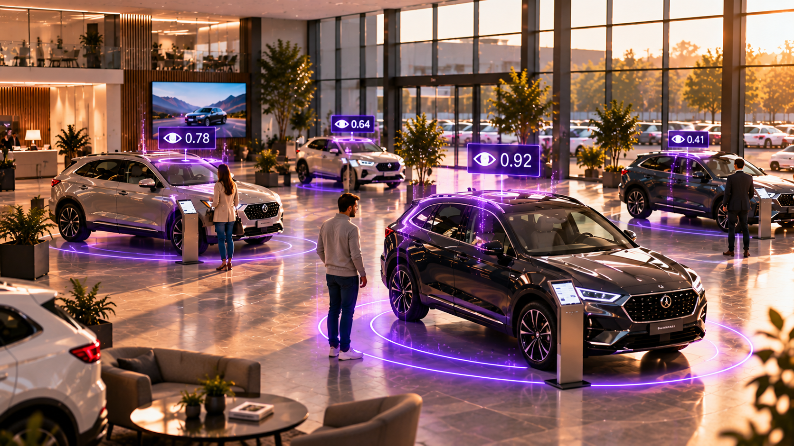
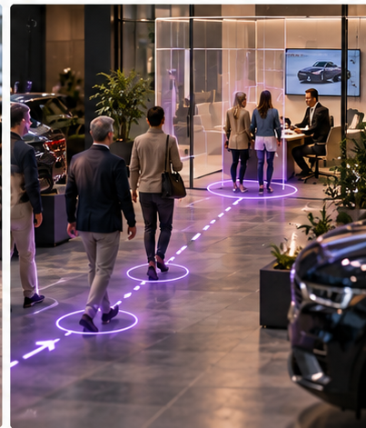

AUTOMOTIVE / CONTEXT 01 / 10
Maak contactkansen zichtbaar. Reageer. Evalueer wat verandert.
Geef de dealer grip op waar contactkansen blijven liggen, wanneer de bezetting onder druk staat en hoe modelbezoek doorloopt naar geregistreerde opvolging.
PFM combineert meetontwerp, operationeel inzicht en dealerreviews. Commerciële verbetering is het doel; aantoonbare resultaten vragen een nulmeting en vergelijkbare opvolging.

AUTOMOTIVE / MEASURE 02 / 10
Een betrouwbare basis begint bij de entree.
Tel in- en uitgaande passages per gekozen entree en tijdvak. Houd personen, herhaalpassages en afgeleide bezoeken uit elkaar. Groepsvorming is een afzonderlijke, te valideren analyse.
Voorgestelde entreeopties: Xovis of Milesight. Productkeuze, dekking en uitsluiting van personeel vragen een locatiecheck.

AUTOMOTIVE / UNDERSTAND 03 / 10
Showroom, service en ontvangst hebben elk een eigen rol.
Maak zichtbaar welke gedefinieerde zones worden bereikt en hoe routes doorlopen. Een bezoek aan de servicezone is een bestemming; het bewijst niet waarom iemand binnenkwam.
Een bevestigd servicedoel vraagt aanvullende afspraak- of registratiegegevens. Houd gemengde en onbekende bezoeken zichtbaar.

AUTOMOTIVE / UNDERSTAND 04 / 10
Bekijk de route door de showroom.
Volg binnen de gevalideerde meetdekking overgangen tussen modelzones. Laat zien welke combinaties voorkomen, zonder een route als persoonlijke voorkeur of koopintentie te presenteren.
Voorgestelde verdieping: LiDAR of een geschikte Xovis 3D-opstelling. Overdracht tussen sensoren, afscherming en zichtlijnen moeten worden gevalideerd.

AUTOMOTIVE / UNDERSTAND 05 / 10
Bekijk modelverblijf en kies waar nader onderzoek nodig is.
Vergelijk zonebereik en verblijfsduur om modelplaatsing en campagnefocus te toetsen. Een ingestelde verblijfsdrempel kan een contactkans signaleren; dit bewijst geen koopintentie.
Leg zonegrenzen, minimale verblijfsduur, terugkeer en passerende trajecten vast voordat modelvergelijkingen worden getoond.

AUTOMOTIVE / UNDERSTAND 06 / 10
Maak mogelijke contactgaten zichtbaar terwijl reageren nog kan.
Scheid geldige bezoeken met contact, nog aanwezige bezoekers zonder contact en afgeronde bezoeken zonder gedetecteerde contactindicator. Onderzoek daarmee de dekking en verbeter het ontvangstproces.
Geldig betekent hier een gevalideerde verblijfsregel, geen bewezen koper. Contact vraagt personeelsonderscheid en nabijheids-/duurregels; geen signaal bewijst niet dat er geen gesprek was.

AUTOMOTIVE / UNDERSTAND 07 / 10
Van de showroomvloer naar de volgende zichtbare stap.
Meet aanwezigheid in de afgesproken deskzone en onderzoek vervolg op contactsignalen. Aan de desk zitten bewijst geen offerte, lead of verkoop.
Een contact-naar-deskpercentage vraagt dezelfde geldige trajecten en observatieperiode. Een offerte vraagt een apart CRM- of DMS-record.

AUTOMOTIVE / PROVE 08 / 10
Verbind showroompatronen met marketing en geregistreerde opvolging.
Vergelijk campagnedata, bezoekvolumes, modelverblijf en contactdekking. Voeg CRM/DMS-leads, offertes en orders toe om samen met de dealer het proces te beoordelen.
Stem bronperioden, kanalen en definities af. Zonder geldige bezoekcohortkoppeling blijven CRM-totalen aparte reeksen. Samenhang met een campagne bewijst geen campagne-effect.

AUTOMOTIVE / CONFIGURE 09 / 10
Begin klein, met duidelijke afhankelijkheden.
Kies entreetelling, showroomzones, gevalideerd personeelsonderscheid en een meldingsproces. Voeg roosters, campagnekalenders en toegestane CRM/DMS-koppelingen toe waar de gekozen vraag dat vraagt.
Meldingen op telefoon of smartwatch zijn volgens aangeleverde productinput mogelijk, bij een geschikt kanaal, ingestelde regel en operationeel eigenaarschap. Deze review verstuurt geen melding en start geen koppeling.
AUTOMOTIVE / ACT 10 / 10
Spreek de reactie, de eigenaar en het bewijs van verandering af.
Test een ontvangstmelding, pas piekbezetting aan of beoordeel campagneopvolging. PFM en de dealer bepalen nulmeting, actie-eigenaar en evaluatiemoment en vergelijken contact- en commerciële indicatoren.
Vergelijk passende perioden en voldoende oude cohorten, met aandacht voor kanalen, bezetting en seizoen. Beschrijf eerst de waargenomen verandering; claim effect pas met onderbouwing. Systeemacties in deze review zijn gesimuleerd.
WAT KRIJGEN WE?
Een illustratief showroomperformance-overzicht voor dagelijkse prioriteiten en dealerreviews.
Northstar Retail Group | Showroom A | 5 nov 2026 | 09:00-14:05 CET | Illustratief momentbeeld
68 geldige bezoeken = 40 met contact + 22 vertrokken zonder gedetecteerd contactsignaal + 6 nog aanwezig zonder gedetecteerd contactsignaal. Contactdekking = 40 / 68 = 58,8%, afgerond 59%.
Modelzone 4: verblijf 2m 05s, geen gedetecteerd contactsignaal. Voorbeelddrempel: 90s. Routeer naar een ingestelde telefoon of smartwatch; hier wordt niets verstuurd.
7 offertes | 3 orders. Illustratieve registraties op de rapportagedag. Dit zijn aparte totalen, geen conversies uit het bezoekcohort van vandaag.
Eenheid: ontdubbelde persoonsbezoeken, geen groepen of geïdentificeerde personen. Geldig: minimaal 60 seconden in een modelzone; voorbeeldregel, geen koopintentie. Contact: gevalideerde medewerkercontactindicator.
Fictief outputvoorbeeld geïnspireerd op het dashboard; de waarden zijn onafhankelijk aangemaakte fixtures. Geen klantdata, benchmark, live feed of gegarandeerd productscherm. CRM-peildatum: 14:00 CET; fysiek momentbeeld: 14:05 CET.
VAN INZICHT NAAR ACTIE
Operationele meldingen en vaste dealerreviews maken van meting een herhaalbaar verbeterproces.
Een ingestelde regel voor verblijf zonder contact kan een telefoon- of smartwatchmelding activeren. Wijs een beschikbare ontvanger toe, bevestig de melding, organiseer dekking en beoordeel de reactie.
Productinput: meldingen zijn al mogelijk. Bevestig kanaalcompatibiliteit, personeelsonderscheid, zones, vertraging, onderdrukking van herhaalmeldingen en escalatie per implementatie. Dit voorbeeld is gesimuleerd.Gebruik drukke tijdvakken, tijd tot contact en zoneverblijf om een rooster- of opstellingsexperiment te kiezen. Wijs een eigenaar aan en vergelijk dezelfde definities vóór en na.
Houd bezoeken zonder contactsignaal zichtbaar. Beoordeel de contacttijd onder bezoeken mét contact apart. Langer modelverblijf is geen bewezen interesse.Combineer campagnekalenders, kanaallabels en toegestane CRM/DMS-registraties met geaggregeerde showroompatronen. Beoordeel of bezoek, modelverblijf, contact en geregistreerde opvolging samen veranderen.
Gebruik toegestane koppelingen, ontdubbeling en een vaste uitkomsthorizon. Vergelijk zonder koppeling alleen aggregaten; schrijf geen individuele orders toe en claim geen causale uplift.Spreek nulmeting, actielog en reviewdatum af. Aantoonbare resultaten vragen vergelijkbaar bewijs; extra verkopen, ROI en terugverdientijd worden niet beloofd.
OPTIONELE VERDIEPING / MOBILE & GEO
Voeg herkomstgebieden, merkgerelateerde bezoekpatronen en geaggregeerd bezoek aan andere showrooms toe wanneer een geschikte bron deze analyse ondersteunt. Dit beschrijft een panel of gemodelleerde populatie, niet iedere getelde bezoeker aan de entree.
Gebruik geaggregeerde herkomstgebieden met de bronpopulatie, periode en gebiedsdefinitie zichtbaar. Geen individuele herkomst aan een sensortraject koppelen.
Bezoek aan merkgerelateerde locaties is een contextsignaal. De term merkaffiniteit vraagt een expliciete providerdefinitie; geen uitspraak over voorkeur, bezit of koopintentie.
Beschikbaarheid, representativiteit, minimumaantallen en locatietoewijzing moeten met de dataleverancier worden bevestigd. Daarom bevat dit voorstel hiervoor geen kaart of fictieve percentages.
De bestaande brochure is niet aangepast. Er zijn geen klantresultaten, prijzen, uplift, benchmarks of live systeemacties aan dit voorstel toegevoegd.
De scènes hierboven tonen een voorkeursselectie ter review. Alle onderstaande beelden zijn kandidaten. Paarse markeringen zijn conceptueel en vormen geen bewijs van sensorbereik, identiteit of meetprestaties.






Het aangeleverde straatbeeld met winkelpassanten blijft buiten Automotive: het toont Retail en ondersteunt dit showroomverhaal niet.